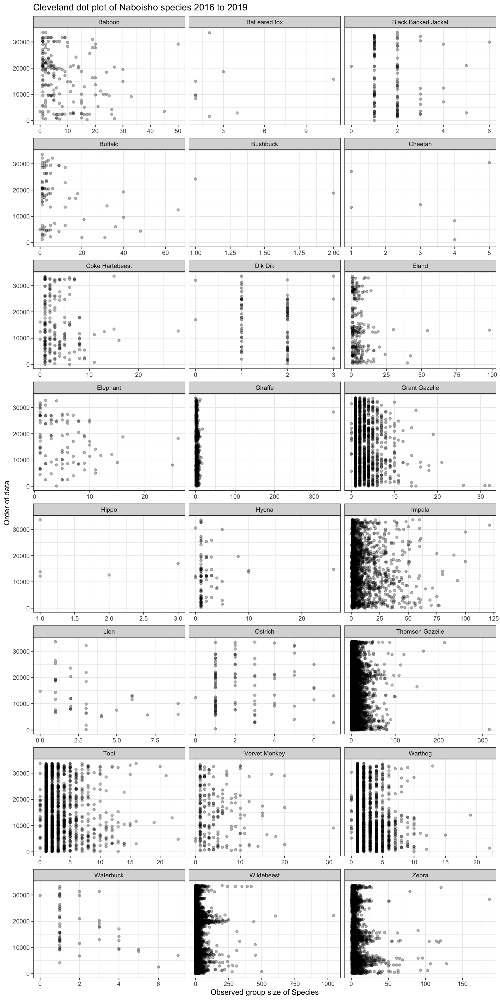
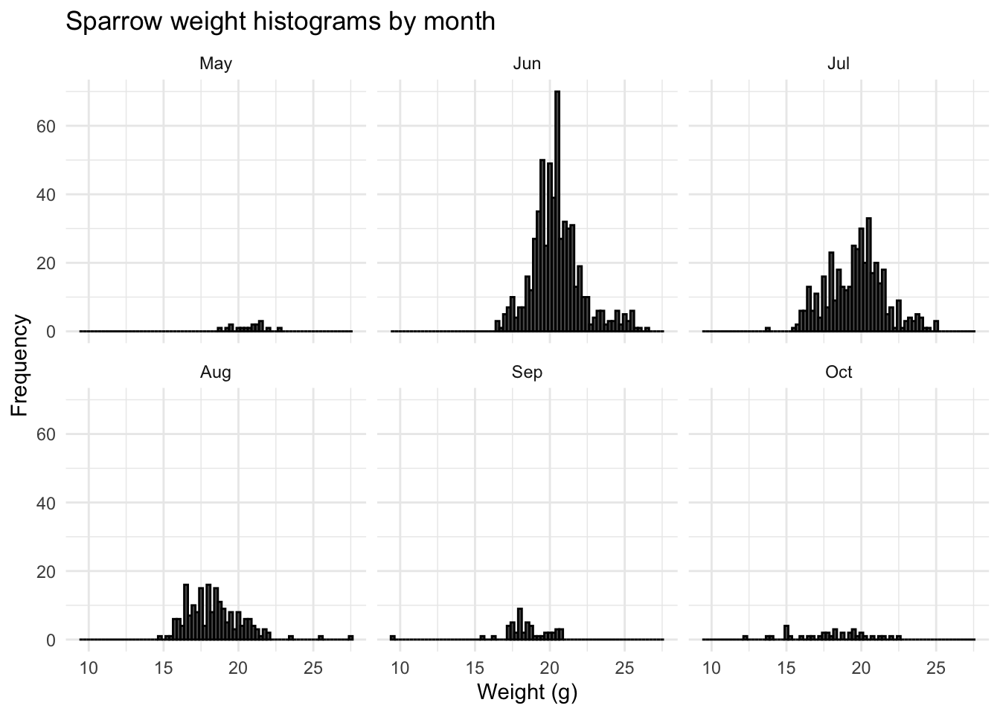
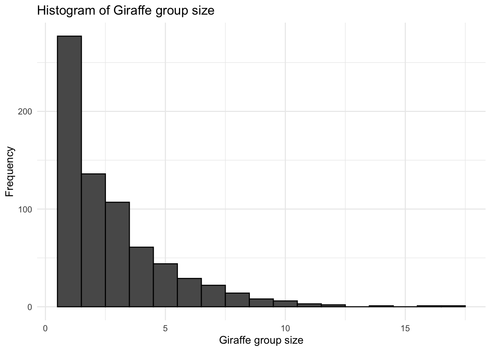
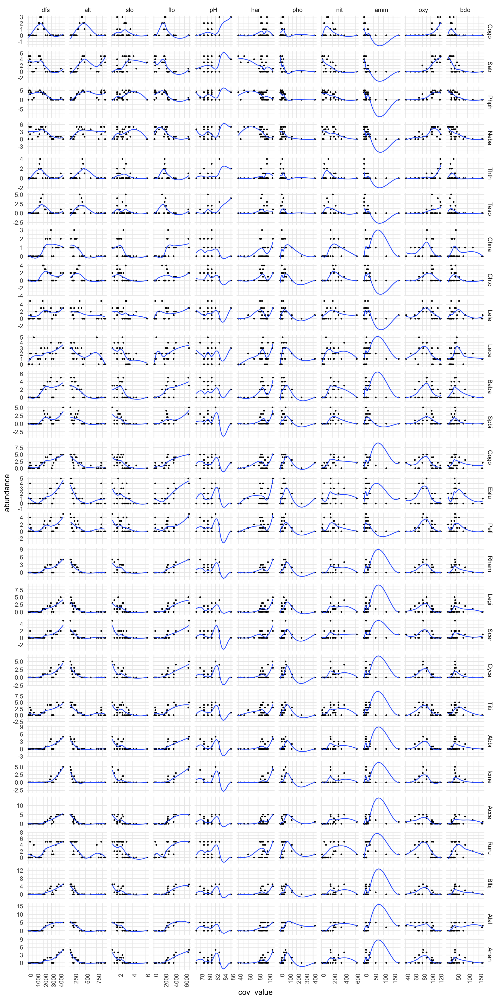

A Protocol for Data Exploration
Introduction
Undertaking a systematic data exploration prior to applying statistical analysis techniques to experimental data can help improve the statistical validity of results and associated conclusons. Key to this is a protocol for ensuring the scientist does not discover a false covariate effect (type I error) or wrongly dismiss a model was valid covariate (type II error).
The aim of this vignette is to provide a protocol for data exploration that identifies potential problems before any statistical analysis is undertaken. The approach outlined makes extensive use of the material discussed in 1. Datasets are sourced from the Internet or academics at Oxford Brookes University.
The data exploration protocol outline is as follows:
- Outliers - observations that are relatively large or small when compared to the majority of observations, can significantly affect a statisical result.
- Homogeneity of variance - a number of statistical techniques assume homogeneity of variance of data. If this is violated the null hypothesis maybe falsely rejected or the power of the test maybe decrease.
- Normality - if data are not normally distributed, a number of statistical tests may not be valid, and alternative approaches will be required
- Zero-inflation - when modelling species counts, a large proportion of the data maybe zeros. In such cases alternative statistical models should be used to avoid biased estimates.
- Collinearity - avoiding correlation between covariates is important otherwise statistical outcomes may not be directly associated with specific covariates.
- Associations - in univariate analysis it is important to explore the indicative relationship between response variables and covariates.
Are there outliers?
In some statistical techniques the results are dominated by outliers; other techniques treat them like any other value. For example, outliers may cause overdispersion in a Poisson GLM. Outliers are defined as an observation that has a relatively large or small value compared to the majority of observations.
In order to demonstrate the data exploration step we will use data from species group sizes in the Naboisho Conservancy within Kenya. Here researchers recorded the size of species groups as they drove along a number of 2km transects.
Boxplots
The boxplot visualizes the median of the data and the spread of the data about it. In the chart below the:
- Median is presented as a vertical line within the white box
- 25% and 75% percentiles form a box around the median that contains half of the observations
- Ends of the thin line either side of the white box are the upper and lower whiskers
- Upper whisker covers values no larger (or smaller) than the inter-quartile range (the distance between the first and third quartiles)
- Data beyond the whiskers are the outliers, and are shown as red dots.
naboisho %>%
filter(species != "None") %>%
ggplot(aes(x=species, y=log10(size))) +
geom_boxplot(outlier.colour="red",
outlier.shape=16,
outlier.size=0.75,
notch=F) +
coord_flip() +
ggtitle("Species group sizes in Naboisho Conservancy. 2016 to 2019") +
xlab("Species") +
ylab("Species group size - log10") +
theme_bw()Note the x axis is scaled to log base 10, in order to compare species with small group sizes, such as Black Backed Jackal, against species with large group sizes such as Zebra or Wildebeest.
Cleveland dot plot
Cleveland dotplot is a chart in which the row number of an observation is plotted vs. the observation value, thereby providing a more detailed view of individual observations than a boxplot allows. Points that stick out on the right-hand side, or on the left-hand side, are observed values that are considerable larger, or smaller, than the majority of the observations, and require further investigation.
The chart below shows a dot plot for each species within the Naboisho dataset from 2016 to 2019.
naboisho %>%
filter(species != "None") %>% # Remove species with no name!
ggplot(aes(x=size, y=seq(1, length(size)))) +
geom_point(alpha=0.3) +
ggtitle("Cleveland dot plot of Naboisho species 2016 to 2019") +
labs(x = "Observed group size of Species",
y = "Order of data") +
theme_bw() +
facet_wrap(~species, ncol = 3, scales = "free_x")
For Giraffe we can see that there is a single outlier; a group size of 350 Giraffe. This is quite clearly a data entry error. If we remove this outlier and replot the dot plot, we see the following:
naboisho %>%
filter(species == "Giraffe") %>%
filter(size <= 300) %>%
ggplot(aes(x=size, y=seq(1, length(size)))) +
geom_point(alpha=0.3) +
ggtitle("Cleveland dot plot of Giraffe Naboisho 2016 to 2019 - outliers removed") +
labs(x = "Observed group size of Giraffe",
y = "Order of data") +
theme_bw()Note we also have a number of observations with group sizing of zero. This is clearly not possible and is probably due to a misunderstanding on behalf of the data recorder, and so we can correct this mistake accordingly:
naboisho <- naboisho %>%
mutate_all(funs(replace(., size == 0, 1)))Implications
Having determined that there are outliers in observations, we can take a number of steps to validate their inclusion or not:
- check the data to ensure that there has not been a data entry error
- check the scientific literature to provide an expected value.
- generate a number of observations randomly from an appropriate distribution, and determine how the proportion of extremem points compares to the field data
If the outliers are deemed valid then it maybe necessary to only use statistical methods that can handle such over-dispersed data. For example, Poisson or negative-binomial distributions for count data.
Homogeneity of variance
Homogeneity of variance is an important assumption in analysis of variance (ANOVA). The plot below shows a boxplot for Wildebesst group size observations within the Naboisho dataset. In the plots below we have assumed that the long rains are from April to May, the short rains are in November and all other months are the dry season.
To apply ANOVA to these data to determine if mean Wildebeest group size varies by year, season or a combination of year and season, we must assume that variation:
- In the years are similar
- In observations for each season are similar
- Between seasons within years are similar.
# Add a column to the data set to determine month of year
naboisho <- naboisho %>%
mutate(Month = month(Date, label= T, abbr = T)) %>%
# Add a season column to data
mutate(season = case_when(
Month == "Apr" ~ "long rains", #long rains
Month == "May" ~ "long rains", #long rains
Month == "Nov" ~ "short rains", #short rains
TRUE ~ "dry")) # Else it's the dry season
wildebeest_seasons <- naboisho %>%
# Take Widebeest only, and remove outliers for group size > 500
filter(species == "Wildebeest", size < 500) %>%
# Filter out 2016 as insufficient data to determine month
filter(year != 2016)
wildebeest_seasons %>%
# Plot boxplots by season, don't display outliers
ggplot(aes(x=season, y=size)) +
geom_boxplot(outlier.shape=NA) +
# Facet by year
facet_wrap(. ~ year) +
coord_cartesian(ylim=c(0, 90)) +
theme_bw() +
ggtitle("Boxplot of Wildebeest group size by season, across years (no outliers)") +
labs(x = "Season and year",
y = "Observed group size of Wildebeest")We can see that the variance between seasons within a year is significantly different for 2017 and 2019. Therefore we should not undertake the classic ANOVA test if we want to analyse differences in group means within the years 2017 and 2019. Also we have more than two groups and because the size data are counts, we should not assume they are normally distributed.
Levenne’s homogenrity of variance test
We can directly test for homogeneity of variances by using Levenne’s test:
library(car)
# Generate a two-way test to incorporate interaction between seasons and years
leveneTest(size ~ as.factor(season) * as.factor(year), data = wildebeest_seasons)## Levene's Test for Homogeneity of Variance (center = median)
## Df F value Pr(>F)
## group 7 24.722 < 2.2e-16 ***
## 9744
## ---
## Signif. codes: 0 '***' 0.001 '**' 0.01 '*' 0.05 '.' 0.1 ' ' 1From the output above we can see that the p-value is much less than the significance level of 0.05. This means that we can not assume equal variances betweens years and seasons.
We therefore need to use a test that does not assume equal variance, can work for three different groups and is non-parametric. The Kruskal-Wallis test is a nonparametric (distribution free) test, and is used when the assumptions of one-way ANOVA are not met. The test can assess for significant differences on a continuous dependent variable (in our case, group size) by a two or more categorical independent variable groups (in our case the three different seasons). With this test we can ask the question if the mean group size between long rains, short rains and dry seasons is statistically different:
# Select 2017 wildebeest observations only
wildebeest_seasons %>% filter(year == 2017) %>%
kruskal.test(.$size, .$season, data = .)##
## Kruskal-Wallis rank sum test
##
## data: .$size and .$season
## Kruskal-Wallis chi-squared = 292.62, df = 2, p-value < 2.2e-16As p << 0.05, we can therefore reject the null hypothesis that the difference in means is zero. So the mean group size does vary by season in 2017. But between which groups is the differnce most significant? To answer this we need a post-hoc test, and for this we use a pairwise wilcox test:
wildebeest_seasons %>% filter(year == 2017) %>%
pairwise.wilcox.test(.$size, .$season, data=.)##
## Pairwise comparisons using Wilcoxon rank sum test
##
## data: .$size and .$season
##
## dry long rains
## long rains <2e-16 -
## short rains 0.025 <2e-16
##
## P value adjustment method: holmThe results show us that the least significant differnce in 2017 was between the dry and short rains seasons, as confirmed by the boxplots above. We can apply the Kruskal-Wallis test across the entire naboisho dataset. Thsi time we’ll test if year on year mean group sizes changes are significant:
# Apply Kruskal-Wallis to each species to see if change in mean year on year is significant
species_kw_test <- naboisho %>%
# Filter species recorded as None
filter(species != "None") %>%
# Count testable data
count(species, year) %>%
# Remove any data less with a count less than 10
filter(n>10) %>%
# Create testable data set
left_join(naboisho) %>%
# Nest each species group
nest(-species) %>%
# Map each group to the Kruskal test
mutate(kruskal_res = map(data, ~ kruskal.test(.x$size, .x$year)),
kruskal = map(kruskal_res, broom::tidy)) %>%
# We dont needed the nested data frames anymore
dplyr::select(-data) %>%
# Unnest the result
unnest(kruskal)
# Select species where we cannot reject the null-hypothesis
species_kw_test %>%
filter(.$p.value > 0.05)## # A tibble: 10 x 6
## species kruskal_res statistic p.value parameter method
## <fct> <list> <dbl> <dbl> <int> <chr>
## 1 Black Backed … <htest> 4.89 0.0869 2 Kruskal-Wallis r…
## 2 Buffalo <htest> 3.88 0.144 2 Kruskal-Wallis r…
## 3 Coke Hartebee… <htest> 0.501 0.778 2 Kruskal-Wallis r…
## 4 Dik Dik <htest> 4.00 0.136 2 Kruskal-Wallis r…
## 5 Elephant <htest> 5.63 0.0598 2 Kruskal-Wallis r…
## 6 Lion <htest> 2.25 0.134 1 Kruskal-Wallis r…
## 7 Ostrich <htest> 0.857 0.652 2 Kruskal-Wallis r…
## 8 Topi <htest> 5.39 0.145 3 Kruskal-Wallis r…
## 9 Vervet Monkey <htest> 1.20 0.548 2 Kruskal-Wallis r…
## 10 Waterbuck <htest> 0.353 0.552 1 Kruskal-Wallis r…The table above lists the species where cannot infer anything from year-on-year mean group size changes.
Implications
Statistical modelling using regression will typically assume homogenous variance. This can be checked by plotting the model residuals against the fitted values. A good fit will have have similar residual variation across all values. In order to address heterogeneity of variance in the response variable, it is possible to transform it; for example via a log transformation. Alternatively, modelling approaches that do not assume equal variance can be used.
Normality
A significant number of statistical modelling tools assuming the data are normally distributed. For example, linear regression assumes the data us normally distributed.
Histogram
The following plot shows a histogram for the weight of 1,193 sparrows 2.
# Load sparrows data set
sparrows <- read.delim("/Users/anthony/Documents/GitHub/ComputationalEcology/data_analysis_files/Sparrows.txt")
ggplot(sparrows, aes(x = wt)) +
geom_histogram(color = "black", binwidth = 0.25) +
theme_minimal() +
labs(x = "Weight (g)",
y = "Frequency")
Density plot
Whislt the histograme appears to have an approximate normal shape, we can plot a density plot to have a better visual check?
library(ggpubr)
ggdensity(data = sparrows$wt,
main = "Density plot of sparrow weight",
xlab = "Sparrow weight") 
Q-Q Plot
The normal Q-Q plot is an alternative graphical method of assessing normality to the histogram. The scatter compares the data to a perfect normal distribution. The scatter should lie as close to the line as possible with no obvious pattern coming away from the line for the data to be considered normally distributed. The Q-Q plot for the sparrow weight data is plotted below:
ggqqplot(sparrows$wt)We can see that the Q-Q plot departs from the theoretical line at extremes. If we subset the data by month and plot a sparrow weight histograme for each month, we can see how the data varies considerably throughout the year.
sparrows %>%
mutate(Month = lubridate::month(Month, abbr = T, label = T)) %>%
ggplot(aes(x = wt)) +
geom_histogram(color = "black", binwidth = 0.25) +
theme_minimal() +
labs(x = "Weight (g)",
y = "Frequency") +
facet_wrap(. ~ Month)
This is most likely due to sampling bias; more samples during the summer. If we plot a historgram of the month the observation was recorded we do indeed see a skew towards summer months:
sparrows %>%
mutate(Month = lubridate::month(Month, abbr = T, label = T)) %>%
ggplot(aes(Month, fill=Month)) +
geom_histogram(stat="count") +
theme_bw()## Warning: Ignoring unknown parameters: binwidth, bins, pad
Implications
If tests suggest that the data are not normally distributed it may be possible to log transform (or take the square root) the response variable and then repeat the normality checks. If we need to undertake further tests that are depednent on normality, for example ANOVA, then we can use non parametric tests such as the Kruskal-Wallis test for a one-way ANOVA test.
Zero inflation
When studying species populations ecologists will often record species count data, and then seek to study how species abundance varies as a function of covariates such as time, habitat type, temperature, weather etc. If species are not observed during a survey, this is recorded as an absence. This can lead to over-dispersion within the data.
This being the case we should proceed with modelling techniques that are based on zero-inflated probability distribution. Such distributions allow for frequent zero-valued observations and one common one is a zero-inflated Poisson (ZIP) model, as well as the zero-inflated negative binomial (ZINB).
In order to determine the number of zeros within a dataset, we can simply plot a histogram of occurence data. Often within survye data species absense is implicit in that only a species presence is recorded. If this is the case then the first thing we should do is record the absence explicitly. In this way, we have a true record of the sampling effort.
If we look at the species data for Giraffe from the Naboisho data set:
# Number of distinct transects undertaken
naboisho %>%
distinct(Date,Sample.Label) %>%
count()## # A tibble: 1 x 1
## n
## <int>
## 1 1099# Number of transects where Giraffe were recorded
naboisho %>%
filter(species == "Giraffe") %>%
distinct(Date, Sample.Label) %>%
count()## # A tibble: 1 x 1
## n
## <int>
## 1 361# Plot a histograme of observation sizes
naboisho %>%
filter(species == "Giraffe", size < 300) %>%
ggplot(aes(x = size)) +
geom_histogram(color = "black", binwidth = 1) +
theme_minimal() +
labs(x = "Giraffe group size",
y = "Frequency")
So we can see that there were 1099 transects undertaken, but only 361 of them have records of Giraffe. So we have not explicitly recorded the fact that during 738 transects no Giraffe were observed. The histogram shows that the vast majority of observations were just for one Giraffe. So let’s update the data to incorporate this:
# Number of transects where Giraffe were recorded
giraffe_transects <- naboisho %>%
filter(species == "Giraffe") %>%
distinct(Sample.Label, Date)
# Select transects where no target species was detected
absence_transects <- naboisho %>%
distinct(Sample.Label, Date) %>%
anti_join(., giraffe_transects, copy = T) %>%
semi_join(naboisho, ., by=c("Sample.Label","Date"), copy=T) %>%
group_by(Sample.Label, Date) %>%
slice(1) %>%
mutate(Species = "NA",
distance = NA,
visit = NA,
size = 0) %>%
as.data.frame()
# Combine missing transects with target species transects
complete_transects <- naboisho %>%
filter(species == "Giraffe", size <300) %>%
rbind(absence_transects[,1:17])
# Plot a histogram of observation sizes with absence transects included
complete_transects %>%
ggplot(aes(x = size)) +
geom_histogram(color = "black", binwidth = 1) +
theme_minimal() +
labs(x = "Giraffe group size",
y = "Frequency")# Check that the number of transects are what we'd expect - 1099
complete_transects %>%
distinct(Date, Sample.Label) %>%
count()## # A tibble: 1 x 1
## n
## <int>
## 1 1099Now we see that by including the transects where Giraffe were not observed (zero-inflating the survey data) the histogram has changed significantly.
Collinearity
Collinearity is when covariates (the independent variables of a data set) are significantly correlated. This is typically a problem as collinearity will inflate the variance of modelled regression coefficients and therefore it is important to detect and remove the redundancy introduced, by dropping one of the covariates where the collinearity is observed. Failure to do this will increase standard errors of regression parameters and therefore inflate p-values [1^] when incorporating such data into regression models.
In order to demonstrate collinearity within independent variables, we can look at the doubs dataset3. This is a dataset that records fish species from a survey of the river Doubs in France, together with the spatial coordinates for the 30 survey sites and environmental covariates for each of the site. We can examine collinearity between the environmental covarites from doubs, by using a correlation matrix. This shows scatterplots between covarite data, together with Pearson coefficients.
library(PerformanceAnalytics)
library(ade4)
#Let's load the data
data(doubs)
# Data representing water chemistry assay for each site...
env <- doubs$env
chart.Correlation(env,
histogram=TRUE,
method = "pearson",
pch=19,
title = "Correlation Matrix")We can easily see that there are a number of covariates with significant (> c.90%) collinearity between. The ecological reasons for this correlation are outlined below.
Topological environmental covariates:
dfs(distance from source) andalt(altitude) - As we move away from the source at theop of a mountain, the altitude decreases.dfs(distance from source) andflo(mean flow rate) - again, as we move away from the source, the flow rate of water increases.alt(altitude) andflo(mean flow rate) - as the altitude decreases, again the flow rate increases.
Water-chemistry environmental covariates:
pho(phosphate concentrate) andamm(ammonium concentrate) - ammonium is an indicator of organic pollution and phosphorus is a common constituent of agricultural fertilizers, manure, and organic wastes 4. So it would appear that likely that their join presence is due to agricultural activities.amm(ammonium concentrate) andbdo(biological oxygen demand) - ammonium and biological oxygen demand are key indicators of organic pollution in water. BOD shows how much dissolved oxygen is needed for the decomposition of organic matter present in water.pho(phosphate concentrate) andbdo(biological oxygen demand) - high levels of phosphorous in water bodies lead to eutriphication, which is likely to be a direct result of phosphate inputs and ammonium organic waste from farming 5.
For each of the covariates pairs outlined above, there is clearly a linear relationship between them. In order to avoid the side-effects mentioned above, we need to select the smallest subset of covariates that explains as much of the overall variation in the response variable(s). We will be exploring indpendent variable selection when fitting models for species distribution modelling.
Associations
Visualising the relationship between the response variable(s) and covariates can help to provide an initial understanding that may aid model selection technique, as well as highlighting observations that do not comply with the general pattern between response and covariate variables.
We can do this for the doubs data set. The plot below shows for each covariate (x axis), how the abundance for different species responds (y axis).
library(reshape2)
# Melt dataframe to give species data
species <- doubs$fish
species$site <- 1:30
df_melt_species <- melt(species,
measure.vars = 1:28,
id.vars = "site",
value.name = "abundance",
variable.name = "species")
environ <- doubs$env
environ$site <- 1:30
# Melt dataframe to give environmental data
df_melt_environ <- melt(environ,
measure.vars = 1:11,
id.vars = "site",
value.name = "cov_value",
variable.name = "env_cov")
# Now plot joined data to see response (species abundance) v covariates
# Begin by joining both melted datasets
full_join(df_melt_species,df_melt_environ,"site", keep = F) %>%
# Remove site as a species column
filter(species != "site") %>%
ggplot() +
# Plot abundance for against each covariate
geom_point(aes( x = cov_value, y = abundance), size = 0.5) +
# Fit a GAM for each plot and plot a smooth
stat_smooth(aes( x = cov_value,
y = abundance),
method = "gam",
# Use cubic splines as basis for GAM
formula = y ~ s(x, bs = "cs"),
size = 0.5) +
# Plot covariate by species - big grid!
facet_grid(species ~ env_cov , scales="free") +
theme_minimal() +
# Flip x axis labels - otherwise they dont fit
theme(axis.text.x = element_text(angle = 90, hjust = 1))
We can see that although there is a lot of information here, we can see some clear types of behaviour for abundnace ~ covariate. For example, species abundance typically reduces as altitude increases, for all species types. If we look at dfs (distance from source), we can see that there are some species that have peak abundnace midstream (Cogo and Satr), where as most othere species have maximum abundance downstream, at the mouth of the river. We can see that species abundance is realtively high at low levels of ammonimum for all species, but abunance is zero for anything above 50 mgL\(^-1\)
Why isn’t pH plotting?!
References
Zuur AF, Leno EN, Elphick CS (2010) A protocol for data exploration to avoid common statistical problems. Methods in Ecology and Evolution↩
Zuur AF, Leno EN, Elphick CS (2010) A protocol for data exploration to avoid common statistical problems. Methods in Ecology and Evolution↩
Verneaux, J. (1973) Cours d’eau de Franche-Comté (Massif du Jura). Recherches écologiques sur le réseau hydrographique du Doubs. Essai de biotypologie. Thèse d’état, Besançon. 1–257. Doubs river fish communities. https://www.davidzeleny.net/anadat-r/doku.php/en:data:doubs↩
https://www.eea.europa.eu/data-and-maps/indicators/freshwater-quality/freshwater-quality-assessment-published-may-2↩
https://www.eea.europa.eu/data-and-maps/indicators/freshwater-quality/freshwater-quality-assessment-published-may-2↩